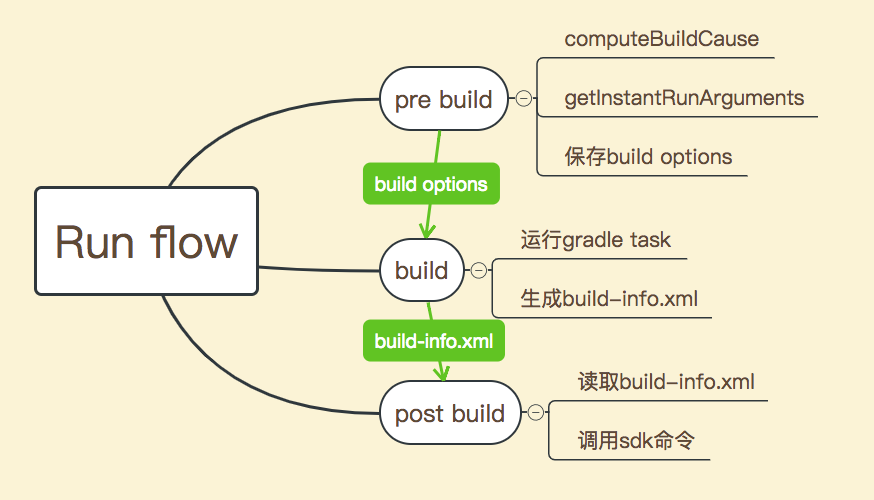

你在Android Stuiod中点击绿色三角形图标(Run)时，背后发生了什么？点击黄色闪电图标(Apply Change)呢？
前言
我们的Android项目有一个奇怪的问题：在Android Studio使用Instant Run运行时，无论修改一行代码还是几行代码，永远都是cold swap，没有见到传说中的hot swap或warm swap。
如果对instant run或hot swap这些概念不是太熟，可以快速浏览一下官方文档。
这个问题本身没有太多影响，无非是多增加几秒中的开发时间。但问题就是问题，不是吗？
我花了一些时间跟进这个问题。本文是从Android Studio如何运行应用的角度来看这个问题的，比较粗线条，一些细节还有待深入。
主要的参考资料是
涉及到的代码包括
运行过程
用户在Android Studio中点击Run或Apply Change运行应用的过程可以简单总结为如下几个阶段：
- 用户点击Run按钮(pre build阶段)
- 开始Gradle构建(build阶段)
- 部署应用并启动(post build阶段)
点一下按钮很简单，但背后的过程其实比较复杂：
- 用户点击Run按钮(pre build阶段) - Android Studio调用AndroidRunConfigurationBase.getState()方法，该方法创建
AndroidRunState实例 - 开始Gradle构建(build阶段) - 跟普通的Gradle构建本质上一样，但Android Gradle Plugin提供了许多Android特定的Task，构建中会用到这些Task
- 部署应用并启动(post build阶段) - 这个阶段又回到Android Studio，Android Studio调用
AndroidRunState.execute()方法，该方法执行一系列的LaunchTasks。LaunchTasks会调用am或install等adb命令安装apk或启动应用
pre build阶段有几个重要的操作：
InstantRunBuilder.computeBuildCause()- 计算本次构建的原因(其中包含build mode)InstantRunBuilder.getInstantRunArguments()- 生成用于Gradle中InstantRun相关Task的参数AndroidRunConfigurationBase.getState()- 保存build options到env 。build options最重要的参数是build mode。
build阶段会从读取到上述build options，build options作为运行Gradle命令时的参数(比如，android.optional.compilation参数)。build阶段的结果会写入到build-info.xml 。
小提示: build-info.xml的两种查看方式
- 项目的
/build/intermediates/build-info/debug/build-info.xml - Android Studio > Show Log in Finder，然后在
flr目录下找到build-info.xml(这里会有很多build-info.xml，分别对应于每一次构建)
post build阶段读取build-info.xml，根据其内容决定如何部署和启动应用。
先用这张图简单总结一下，再来逐个分析。

由于涉及到日常app开发中不常见的一些东西，为尽可能容易理解，对每个阶段都按这个套路进行分析。
- 属于哪个阶段，涉及到的工具
- 对应的日志
- 对应的代码
- 相关的代码
提示：一些代码很难完全看懂，但根据对应的日志不难猜出大概
Pre build
Pre build阶段发生在Android Studio中用户点击Run按钮时。
对应的重要日志见Android Studio的idea.log (日志位置 Android Studio > Show Log in Finder)。日志如下，通过该日志可以知道当前构建的原因以及构建的类型。
1 | 2018-10-17 14:27:33,770 [thread 476] INFO - ools.idea.fd.InstantRunBuilder - BuildCause: APP_NOT_RUNNING, BuildMode: COLD |
对应的代码见：
这里只看三个较重要的方法。
AndroidRunConfigurationBase.getState()主要有以下功能：
- 选择手机或模拟器设备
- 保存build options
InstantRunBuilder.computeBuildCause()方法中计算BuildCause。BuildCause定义如下：
1 | public enum BuildCause { |
如果在使用Instant Run过程中遇到问题或疑惑，或许可以从computeBuildCause()的代码找到答案。以这个精简后的代码为例
1 |
|
通过代码我们可以知道：
- 修改应用的manifest后不可能进行hot swap，至少会是cold swap。因为修改manifest后返回
MANIFEST_RESOURCE_CHANGED，它对应BuildMode.COLD - 多进程的应用不可能进程hot swap，至少会是cold swap。因为多进程应用时返回
APP_USES_MULTIPLE_PROCESSES，它对应BuildMode.COLD
再看一下InstantRunBuilder.getInstantRunArguments()方法，它为build过程生成参数。
1 | private static List<String> getInstantRunArguments(@NotNull BuildMode buildMode) { |
这段代码的意思就是根据不同的buildMode，会生成不同的参数传给Gradle：
HOT- INSTANT_DEV， 传-Pandroid.optional.complilation=INSTANT_DEVCOLD- RESTART_ONLY， 传-Pandroid.optional.complilation=INSTANT_DEV,RESTART_ONLYFULL- FULL_APK， 传-Pandroid.optional.complilation=INSTANT_DEV,FULL_APK
Gradle收到的参数不同，运行的Task也将有所不同。
Build
Build阶段发生在Gradle中。
对应的重要日志见build.log (日志位置 Android Studio > Show Log in Finder， 然后找flr目录)。日志如下，通过该日志知道重新编译的class文件跟前一个版本是兼容的，所以接下来可以进行hot swap：
1 | Receiving verifier result: COMPATIBLE. Current Verifier/Build mode is NO_CHANGES/HOT_WARM. |
Build阶段还会生成一个重要的文件build-info.xml (日志位置 Android Studio > Show Log in Finder， 然后找flr目录)
对应的代码见com.android.build.gradle.internal.InstantRunBuildContext.setVerifierStatus() Github
相关的代码有：
TaskManager.createPostCompilationTasks()InstantRunTaskManager.createPreColdswapTask()，这个方法会读取上述android.optional.complilation参数
1 | // InstantRunTaskManager.java |
Post Build
Post Build阶段发生在Android Studio。
对应的代码见com.android.tools.idea.run.AndroidLaunchTasksProviderFactory，它读取build-info.xml确定要执行的Task。
这里不展开分析，只上一张图
注意：这张图跟最新的代码不完全对应，但不影响理解。
关键代码
这里记录一下分析问题过程中遇到的一些关键代码，以备查找。
JetBrains/android
build相关：
com.android.tools.idea.fd.BuildMode- 构建模式。分为HOT, COLD, FULL三种com.android.tools.idea.fd.BuildCause- 构建原因com.android.tools.idea.run.AndroidRunConfigurationBasecom.android.tools.idea.run.AndroidRunConfigurationcom.android.tools.idea.fd.InstantRunBuilder
task相关：
- com.android.tools.idea.run.AndroidLaunchTasksProviderFactory - 读取build-info.xml
- com.android.tools.idea.run.AndroidLaunchTasksProvider
- com.android.tools.idea.run.tasks.NoChangesTask
- com.android.tools.idea.run.tasks.HotSwapTask
- com.android.tools.idea.run.tasks.SplitApkDeployTask
Android Gradle Plugin
com.android.build.gradle.internal.incremental.BuildInfoWriterTask- 创建build-info.xmlcom.android.build.gradle.internal.incremental.InstantRunBuildContext- 记录了构建相关的信息，这些信息将写入build-info.xmlcom.android.build.gradle.internal.transforms.InstantRunVerifierTransform- 比较同一个class文件的两个版本是否支持instant runcom.android.build.gradle.internal.transforms.InstantRunTransform- 比class进行增强，以支持instant run的hot swap
总结
用户在Android Studio中点击Run或Apply Change运行应用时，Android Studio会保存build options并为Gradle生成参数。Gradle进行实际构建，构建结果记录在build-info.xml文件中。Android Studio分析构建结果后调用Android SDK相关工具部署并启动应用。
参考
android/README.md at master · JetBrains/android